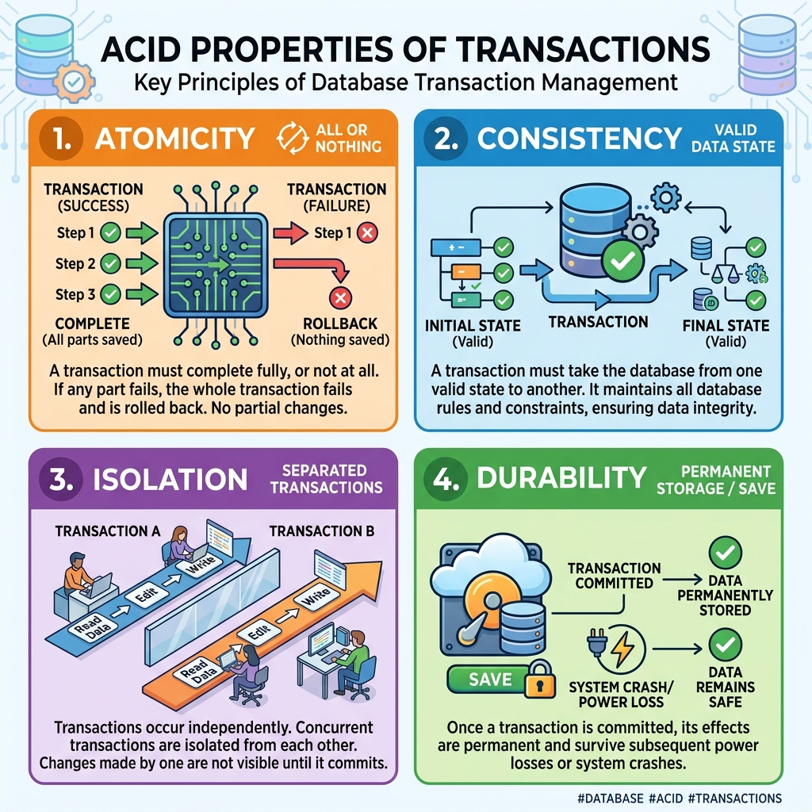
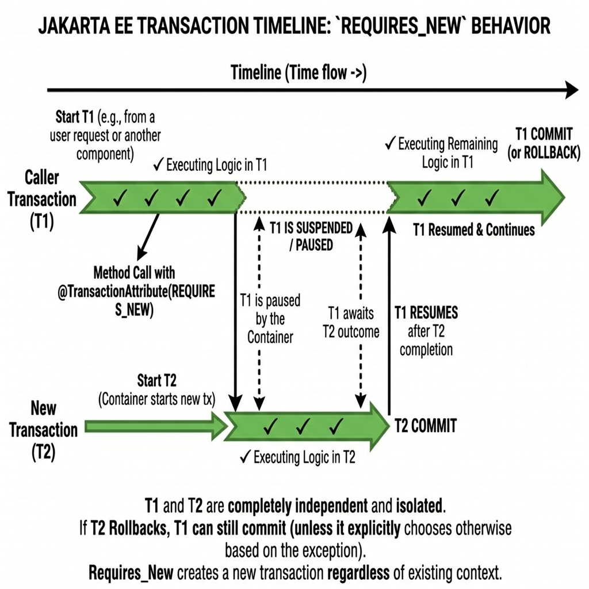

<title>Transactions & ACID</title>
<meta name="description" content="All-or-nothing operations: the ACID rules and the six container transaction attributes, in plain words.">
<link rel="stylesheet" href="assets/css/styles.css">
<script>window.PAGE = "06-transactions";</script>

<main class="page">

  <h1>Unit 06 · Transactions &amp; the ACID rules</h1>
  <p class="lede">A <strong>transaction</strong> is a group of steps that must <em>all</em> succeed or
    <em>all</em> be undone — never half. It’s the single most important guarantee in enterprise
    software, and the container gives it to you with one annotation.</p>

  <div class="callout"><span class="callout__i">↩︎</span>
    <div class="callout__b"><b>Recap</b> Beans get a DB connection from a pooled DataSource (Unit 05).
      Now: making a set of DB changes safe as a unit.</div>
  </div>

  <span class="eyebrow">concept</span>
  <h2>The bank-transfer story</h2>
  <p>Move $1,000 from your account to your sister’s. Two steps: <strong>debit you</strong>,
    <strong>credit her</strong>. If the power cuts between them, $1,000 vanishes. A transaction makes
    the pair atomic: both happen, or neither does.</p>
  <pre><code>void transfer(Account from, Account to, double amount) {
    from.debit(amount);     // step 1
    to.credit(amount);      // step 2
    // both ok  -> COMMIT (make permanent)
    // either fails -> ROLLBACK (undo step 1 too)
}</code></pre>

  <span class="eyebrow">concept</span>
  <h2>ACID — four properties every transaction keeps</h2>
  <div class="tablewrap"><table>
    <thead><tr><th>Letter</th><th>Name</th><th>Plain meaning</th><th>Example</th></tr></thead>
    <tbody>
      <tr><td>A</td><td>Atomicity</td><td>All steps or none.</td><td>Card charged but seat not reserved → the charge is reversed.</td></tr>
      <tr><td>C</td><td>Consistency</td><td>The database goes from one valid state to another; no rule broken.</td><td>A withdrawal that would push a balance past the overdraft limit fails.</td></tr>
      <tr><td>I</td><td>Isolation</td><td>Concurrent transactions don’t see each other’s half-done work.</td><td>Teller B can’t act on a balance Teller A hasn’t committed yet.</td></tr>
      <tr><td>D</td><td>Durability</td><td>Once committed, it survives crashes.</td><td>After the receipt prints, “our server crashed and lost it” can’t happen.</td></tr>
    </tbody>
  </table></div>
  <figure>
    
    <figcaption><b>Takeaway:</b> ACID is the contract. The container + database enforce it; you just
      mark where a transaction begins and ends.</figcaption>
  </figure>

  <span class="eyebrow">concept</span>
  <h2>Who draws the boundaries?</h2>
  <div class="tablewrap"><table>
    <thead><tr><th></th><th>Container-managed (CMT)</th><th>Bean-managed (BMT)</th></tr></thead>
    <tbody>
      <tr><td>You write</td><td><code>@TransactionAttribute(REQUIRED)</code> on the method</td><td><code>userTransaction.begin()</code> … <code>.commit()</code> / <code>.rollback()</code> by hand</td></tr>
      <tr><td>Who commits/rolls back</td><td>The container, automatically</td><td>You, explicitly</td></tr>
      <tr><td>Use when</td><td>Almost always</td><td>Rare: very complex conditional commit logic</td></tr>
    </tbody>
  </table></div>
  <p>An exception thrown out of a container-managed method triggers an automatic rollback. That’s the
    normal way to fail a transaction — just throw.</p>

  <span class="eyebrow">concept</span>
  <h2>The six transaction attributes</h2>
  <p>They answer: “when this method runs, what happens to the caller’s transaction?”</p>
  <div class="tablewrap"><table>
    <thead><tr><th>Attribute</th><th>Caller HAS a transaction</th><th>Caller has NONE</th><th>Use for</th></tr></thead>
    <tbody>
      <tr><td><strong>REQUIRED</strong> <em>(default)</em></td><td>Join it</td><td>Create a new one</td><td>Almost everything — deposits, withdrawals, transfers</td></tr>
      <tr><td><strong>REQUIRES_NEW</strong></td><td>Suspend it, run in a fresh one</td><td>Create a new one</td><td>Audit logging — must commit even if the main work rolls back</td></tr>
      <tr><td><strong>MANDATORY</strong></td><td>Join it</td><td>Throw an exception</td><td>Internal helpers that must never run standalone</td></tr>
      <tr><td><strong>SUPPORTS</strong></td><td>Join it</td><td>Run with none</td><td>Flexible read-only lookups</td></tr>
      <tr><td><strong>NOT_SUPPORTED</strong></td><td>Suspend it, run with none</td><td>Run with none</td><td>Reports where transaction overhead isn’t wanted</td></tr>
      <tr><td><strong>NEVER</strong></td><td>Throw an exception</td><td>Run with none</td><td>Long batch jobs that must not hold a transaction open</td></tr>
    </tbody>
  </table></div>

  <div class="code-head">REQUIRES_NEW — why audit logs use it</div>
  <pre><code>@Stateless
public class AuditLogBean {
    @TransactionAttribute(TransactionAttributeType.REQUIRES_NEW)
    public void logEvent(String details) {
        // its own fresh transaction: commits independently.
        // even if the caller's transaction rolls back, this entry stays.
        auditDAO.insert(details);
    }
}</code></pre>

  <div class="bench" data-run="canned">
    <div class="bench__head"><span class="dot"></span><span class="kind">try it</span><span class="mode">replay — real server output</span></div>
    <pre class="bench__code"><code>// transferFunds() is REQUIRED. It calls the audit log (REQUIRES_NEW),
// then throws on purpose.
transfer.transferFunds("ACC123", "ACC999", 500);</code></pre>
    <div class="bench__controls">
      <button class="btn-run" type="button">Run</button>
      <span class="bench__hint">The audit line survives; the transfer is rolled back. That's the point of REQUIRES_NEW.</span>
    </div>
    <script type="text/plain" class="bench__canned">
Starting transfer transaction...
&gt;&gt;&gt; AUDIT SECURE LOG: Saved to database: Attempting transfer of $500.0 from ACC123
Simulating system crash...
jakarta.ejb.EJBException: java.lang.RuntimeException: CRITICAL ERROR: connection lost
   -&gt; transferFunds() transaction ROLLED BACK
   -&gt; audit entry was committed in its OWN transaction, so it remains
    </script>
    <pre class="bench__out" aria-live="polite"></pre>
  </div>

  <figure>
    
    <figcaption><b>Takeaway:</b> <code>REQUIRES_NEW</code> suspends the caller’s transaction, does its
      work in a separate one that commits on its own, then hands control back.</figcaption>
  </figure>

  <div class="callout callout--tip"><span class="callout__i">💡</span>
    <div class="callout__b"><b>Reading a rollback error</b>
      An <code>EJBTransactionRolledbackException</code> is never the real problem — it’s the
      <em>consequence</em>. Scroll down the stack trace to the <strong>“Caused by:”</strong> line
      (usually a <code>NullPointerException</code> or <code>SQLException</code>) and fix that.</div>
  </div>

  <span class="eyebrow">check yourself</span>
  <section class="quiz" data-quiz>
    <h3>Check yourself</h3>
    <script type="application/json">
    [
      {"q":"Which ACID property guarantees that if step 2 fails, step 1 is automatically undone?","opts":["Consistency","Atomicity","Isolation","Durability"],"a":1,"why":"Atomicity = all steps or none. A failure rolls back everything done so far."},
      {"q":"With container-managed transactions, how do you make a transaction fail?","opts":["Call rollback() yourself","Throw an exception out of the method — the container rolls back","Return false","Set @TransactionAttribute(NEVER)"],"a":1,"why":"An unhandled exception from a CMT method triggers an automatic rollback."},
      {"q":"Default transaction attribute if you write none?","opts":["REQUIRES_NEW","SUPPORTS","REQUIRED","NEVER"],"a":2,"why":"REQUIRED: join the caller's transaction, or start one if there isn't one."},
      {"q":"Audit logging uses REQUIRES_NEW because...","opts":["It's faster","The audit record must be saved even when the main business transaction rolls back","Audit logs can't use REQUIRED","It disables security"],"a":1,"why":"REQUIRES_NEW commits in its own transaction, so a rollback of the caller doesn't erase the log entry."},
      {"q":"You see EJBTransactionRolledbackException in the log. What do you do?","opts":["Add a try/catch around everything","Find the 'Caused by:' further down — that's the real error — and fix it","Switch to bean-managed transactions","Restart WildFly"],"a":1,"why":"The rollback exception is the symptom; the root cause is under 'Caused by:'."}
    ]
    </script>
  </section>

  <span class="eyebrow">recap</span>
  <h2>One-line summary</h2>
  <div class="tablewrap summary"><table><tbody>
    <tr><td>Transaction</td><td>A set of steps that commit together or roll back together.</td></tr>
    <tr><td>ACID</td><td>Atomic (all/none), Consistent (rules hold), Isolated (no dirty reads), Durable (survives crashes).</td></tr>
    <tr><td>CMT</td><td>Declare with <code>@TransactionAttribute</code>; container commits/rolls back; throw to fail.</td></tr>
    <tr><td>REQUIRED</td><td>Default: join or create a transaction.</td></tr>
    <tr><td>REQUIRES_NEW</td><td>Own separate transaction — used for audit logs.</td></tr>
  </tbody></table></div>

</main>

<script src="assets/js/course.js"></script>
<script src="assets/js/runner.js"></script>
